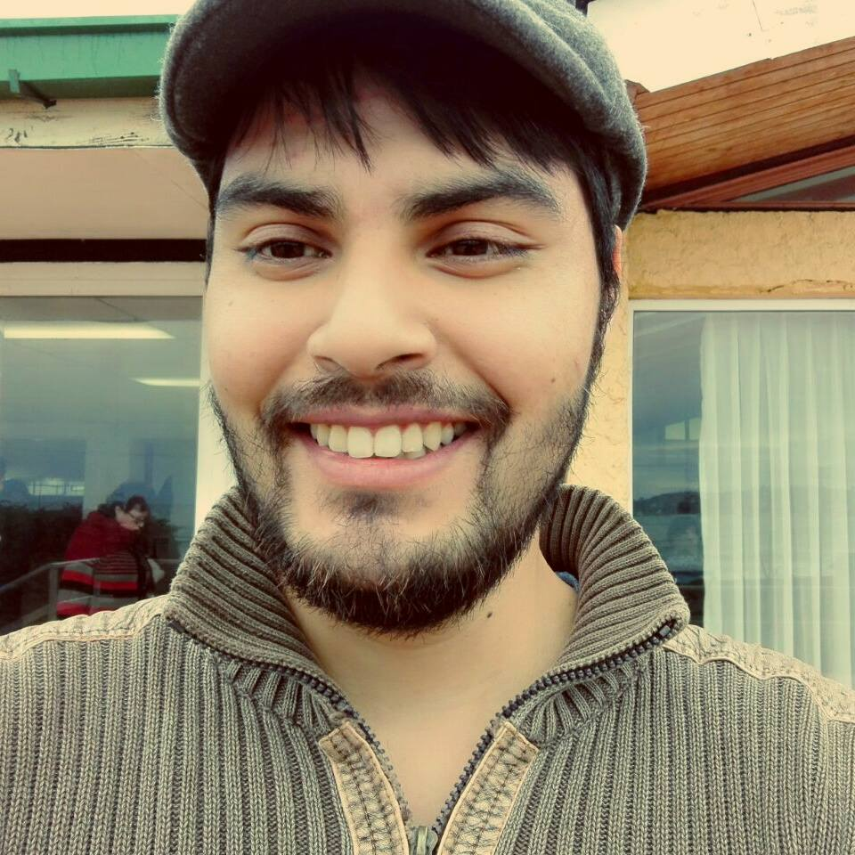

Curriculum Vitae
Christopher López
Oriundo de Santiago radicado en Ovalle, región de Coquimbo. Hombre aventurero, creativo y soñador por naturaleza. Desde que tengo memoria me ha facinado la ciencia ficción tanto en la literatura como en el cine y el conjunto de esas cosas me empujaron siempre a querer saber el cómo funcionaba el mundo y los electrodomésticos —y a veces a romperlas. Me gusta crear e inventar cosas, por lo que vi en la programación web el potencial para diseñar una infinidad de cosas y para perfeccionarme tomé Desafio Latam —Desarrollo Fullstack JS— para capacitarme y expandir mis conocimientos laborales con la intensión de, algún día, desarrollar mi emprendimiento: SINRETEL.
Información personal
| Año de nacimiento: 1993 |
| Estado civil: Casado |
| Correo: sinretel@gmail.com |
| Edad: 29 años |
| Residencia: Ovalle, Coquimbo, Chile. |
Formación académica
| Centro de estudio: | Colegio Profesor Guillermo González Heinrich |
| Título obtenido: | Técnico en Telecomunicaciones. |
| Período de estudio: | 2009-2011 |
| Centro de estudio: | INACAP |
| Título obtenido: | Técnico superior en Telecomunicaciones, Conectvidad y Redes. |
| Período de estudio: | 2013-2014 |
| Centro de estudio: | INACAP |
| Título obtenido: | Ingeniero en Telecomunicaciones, Conectvidad y Redes. |
| Período de estudio: | 2015-2016 |
Información laboral
| Empresa: | CODIPRA |
| Cargo: | Repartidor de pollos y huevos en bicicleta. |
| Período: | 2012 - 2015 |
| Empresa: | PROYCON |
| Cargo: | Técnico analista en terreno. |
| Período: | 2015 - 2021 |
| Empresa: | EIKORP |
| Cargo: | Técnico microinformática en terreno. |
| Período: | 2021 - Actualmente. |
Conocimientos y Habilidades:
- Diseño y montaje de cableado Ethernet para redes de datos.
- Diseño y montaje CCTV análogo.
- Diseño y montaje vídeo vigilanicia IP.
- Identificación, montaje y ordenamiento de racks de telecomunicaciones.
- Habilidades blandas con usuarios.
- Resiliencia ante situaciones adversas.
- Detallista al momento de trabajar.
- Conocimiento en mantención de hardware computacional.
- Soporte informático y ofimática en general.
- Conocimento básico en HTML, CSS3 Y JS
Hobbies
Aficcionado a los viajes en bicicleta. También a los libros de ciecia ficción y fantasía, novelas de detectives y dramas históricos. En mis ratos libres me gusta escribir; algún día me gustaría publicar la novela que escribo.